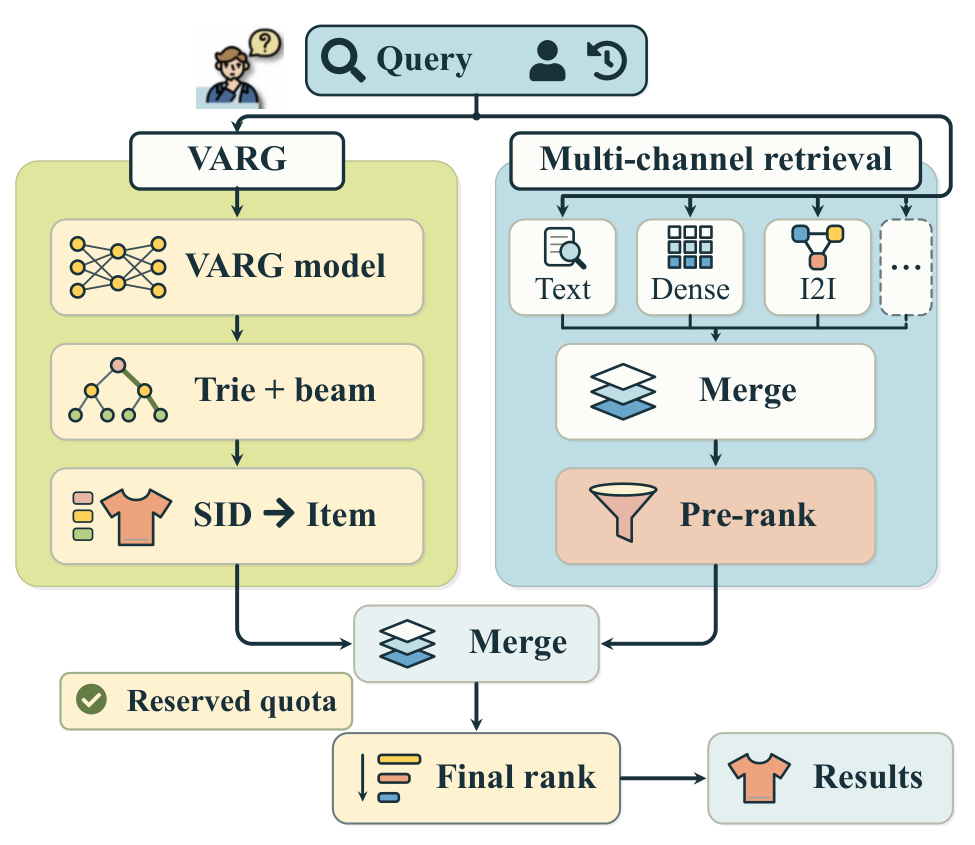
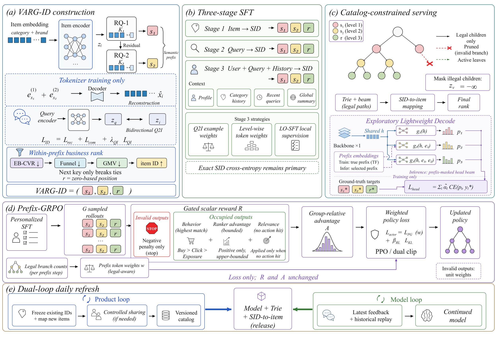
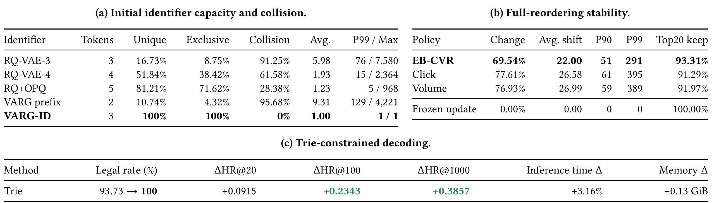
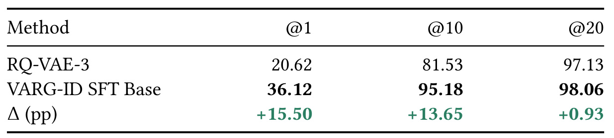
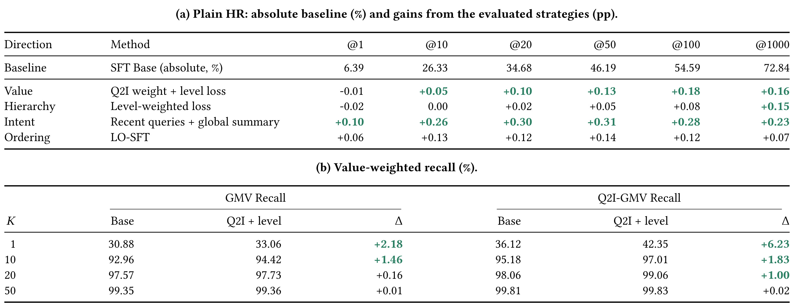
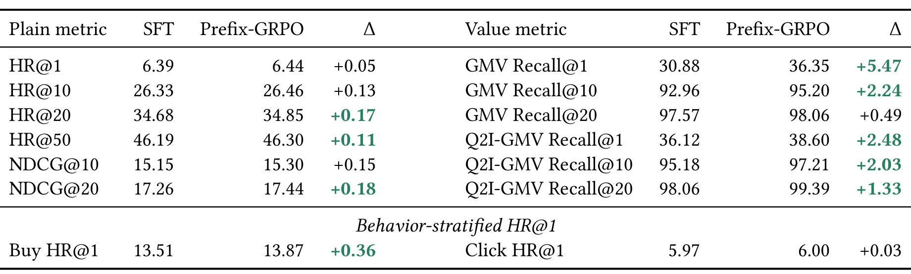
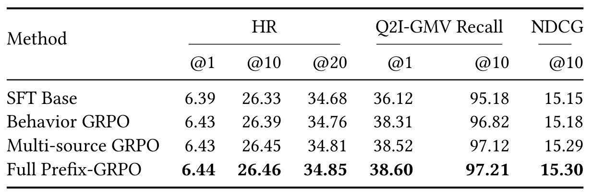
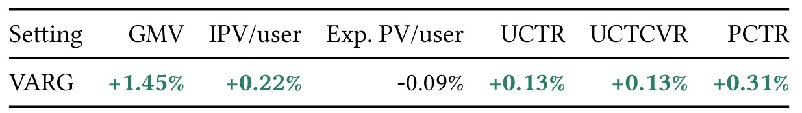
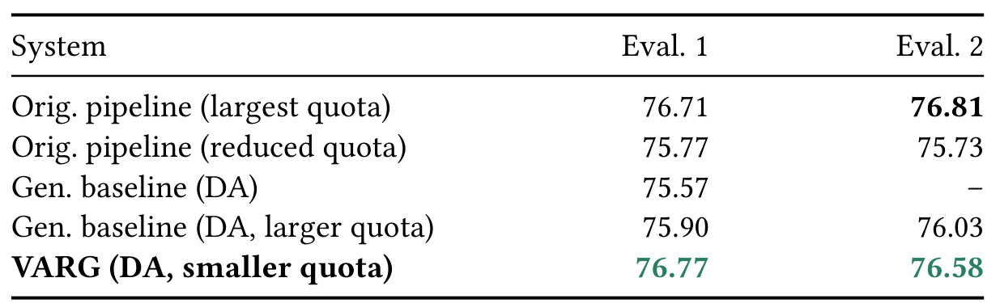
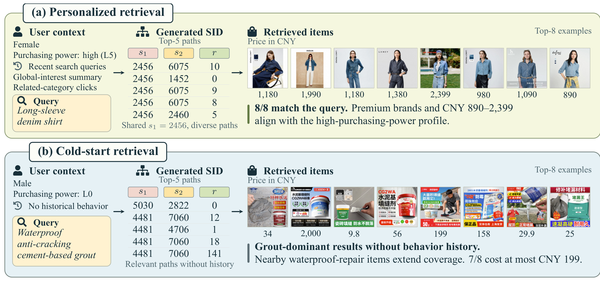

VARG：将价值与精排目标提前到生成式召回
VARG 的完整标题是 VARG: Value-Aware and Ranking-Aligned Generative Retrieval for Dynamic E-commerce Search。第一作者 Xiaopeng Chu 来自中国科学技术大学，合作作者来自阿里淘天和南开大学；本文于 2026 年 9 月 13 日首次公开，本文笔记按 2026 年 9 月 16 日读取的 v1 整理。论文入口。尚未核验到独立代码入口。原稿保留了会议模板占位文字，因此不能据此推定已被某个会议录用。
电商搜索要融合召回与预排序，就必须让候选生成在进入最终排序之前同时考虑相关性、个性化和商业价值，并适应商品及模型的持续更新。
1. 背景和问题
1.1 从“找到相关商品”到“为有限精排名额选商品”
电商搜索通常把巨大的商品集合逐步压缩：多路召回先从不同角度找到候选，预排序用相对便宜的模型进一步筛选，最终排序再投入更完整的特征和模型计算。这样的级联既是在分配算力，也是在分配犯错机会。一个真正符合用户需求的商品只要在上游被漏掉，下游排序再准确也无法挽回；反过来，如果召回数量增加却没有提高候选质量，就会加重后续筛选负担。在业务价值与用户体验同时受约束的搜索场景，单纯让目标商品出现在很长的召回列表中，还不足以说明系统有用。
VARG 选择了一个明确的工业问题：保留既有多路搜索体系，增加一条生成式通道，并让这一通道的结果经过预留名额直接进入最终排序。这使候选生成承担了部分原本由预排序完成的选择责任。它不能只回答“这个查询大概属于哪类商品”，还要在有限候选数内判断哪些具体商品更值得交给精排。相关性是前提，用户偏好决定同一查询下不同人的合理差异，商业价值则涉及购买倾向与交易金额。三者不会天然一致：热门商品未必对应当前意图，高价商品也未必符合需求，历史高转化商品在新用户或新查询上可能失效。
论文里的“召回与预排序融合”应放在这个接口上理解。它没有把整个搜索系统替换为一个自由生成答案的大模型，也没有取消最终排序。新增通道与传统通道仍需合并去重，最终展示顺序仍由已有精排决定。这个边界直接影响实验解释：线上收益来自完整通道在生产系统中的增量作用，不能归结为某一个公式单独替代了整个精排模型。对于已经有成熟级联的团队，这种接入方式的价值在于让新模型先竞争一部分候选名额，保留原有系统的覆盖与兜底能力。
1.2 三个互相牵制的问题
第一个问题是商品寻址。生成式检索把商品表示成离散标识，再学习从用户上下文生成这个标识。若标识只对应语义簇，同一个标识可能展开为大量商品，这有利于覆盖，却弱化了生成模型对簇内商品的控制。模型即便选对了“牛仔衬衫”这个区域，也不一定区分出合适品牌、价位和转化倾向的商品。当候选绕过预排序时，这种不确定性会直接消耗精排配额。增加更多量化层可以减少冲突，但又增加生成步数和学习难度，并不自动把商业价值变成可用的先验。
把簇内价值顺序编码进标识能使选择更细，但会引出第二层矛盾：商品库和统计信号每天变化，低频商品的转化率尤其不稳定。如果每天按最新转化率重新排序，商品的数字地址就会改变。模型之前学到的“用户意图到地址”关系随之过期；用户历史行为里保存的地址也会失去原来的含义。因此，商品地址稳定和模型知识稳定是两件事。历史回放可以减缓参数遗忘，却不能修复训练标签本身被悄悄换义的问题。VARG 用初始细粒度编码、每日地址冻结和周期性重建分别处理这些约束，代价是日更阶段接受受控共享。
第二个问题是监督从哪里来。商品内容与其地址的对应关系，只教会模型“记住商品在哪里”；查询到商品的关系，才开始教会它“用户在找什么”；用户画像、近期查询和跨领域兴趣，则进一步决定“这个用户更可能要什么”。如果一开始就把所有目标揉在一起，并把高价值样本过度加权，模型可能在还没建立可靠商品记忆时就偏向少量商业头部。本文因此使用顺序三阶段训练，并把价值样本权重只打开在第三阶段。层级标识的不同位置也不是等价分类题：语义前缀错了，最后一位再准确也没有意义。
第三个问题是目标商品之外的反馈。普通监督通常只有日志里发生行为的商品作为目标，对于同一个请求下其他合理候选缺少直接比较信号。仅用点击、购买匹配奖励，很多生成结果都会得到零，优化过程难以知道它们是相关但未曝光、真正不相关，还是地址根本不存在。本文引入精排模型的相对得分和相关性等级补充反馈，同时先做合法性门控。这种顺序很关键：非法地址不应该因为碰巧获得某个外部打分而被奖励，已知购买商品也不必重复累加相关性标签来制造虚假的多重证据。
1.3 如何阅读贡献与证据
从方法构成看，VARG 把查询对齐的离散编码、经验贝叶斯价值排序、连续训练、分层监督和策略优化接到同一条生产链路上。其主要贡献是这些部分在动态商品库和直接精排接口下的共同设计，而不是宣称每个组件都是独立发明。论文对相关工作也交代了语义 ID、簇内业务排序、生成式检索强化学习等前序方向。因此评价它时，应该同时问三个问题：地址是否可稳定解释，训练信号是否改善有限预算下的候选优先级，以及最终业务收益是否真的出现在生产实验中。
证据层次也需分开。离线标识审计证明初始容量与冲突特征；监督和强化学习消融说明特定训练配置的相对效果；线上实验验证完整系统；展示案例只提供可理解的输出例子。离线金额加权召回不是在线新增收入，选出的两个好案例也不能代表冷启动总体表现。本文最值得保留的阅读线索，是观察模型如何把价值向候选列表头部移动，同时检查普通召回是否受损、地址共享是否失控，以及更快的解码是否牺牲太多质量。以下方法与实验围绕这些可核对的区别展开。
2. 方法
2.1 VARG-ID 与系统目标

图中左侧 VARG 依次执行上下文条件生成、字典树约束的束搜索和标识到商品的映射，右侧传统分支继续使用文本、向量及商品关联等多路召回，随后经过预排序。两侧在最终排序前合并，而左侧有专门保留的名额。这意味着生成概率决定了哪些商品有机会被精排充分评估，并没有直接等同于最终展示分数。图中共享的查询和用户上下文又说明，新通道需要同时响应当前需求与用户差异；只学一个不随请求变化的全局高价值商品榜，无法完成这个接口的职责。图里另外两个容易忽略的节点是 Trie 和 SID-to-item。前者保证输出路径存在于已发布目录，后者把离散地址恢复为实际商品；模型本身没有凭空创造新的商品实体。由于每日更新可能让一个地址对应多个商品，生成路径数也未必等于展开后的商品数，合并、去重与名额控制仍有工程意义。论文公开了主线上逐层束宽，但没有充分披露每种共享情况下的最终配额分配规则。我的理解是，评估这类通道时应同时记录路径命中与展开后商品质量，否则一个标识覆盖更多商品就可能使召回看起来更容易，而实际精排负载已经改变。这个解释来自接口结构，不是论文额外报告的实验结论。也正因此，直接精排通道的验收对象应是实际商品候选，而非仅仅一串合法数字。
原文总框架把地址、训练、服务和刷新放到同一视图。先建立稳定的地址体系，再用监督学习建立检索能力，随后以强化学习改变候选优先级，最后用版本一致的目录约束上线。

左上角的编码器把包含类目、品牌等信息的商品向量送入两层残差量化，得到语义前缀；查询编码器只参与标识训练，用双向查询商品对比损失把搜索意图注入连续空间。前缀内部再按价值规则分配第三位。中上方的三个监督阶段依次从商品记忆过渡到查询检索和个性化检索，第三阶段才增加价值权重、层级权重与局部序监督。右上角的主服务路径用 Trie 排除非法分支；同一个区域内另画出的轻量解码是探索方案，不能把图上的所有模块都理解为已经共同投入主线上。下方强化学习部分先给完整响应算一个门控奖励，再转为组内优势，最后在策略损失中按前缀分支数给不同位置加权。图特意注明权重不改变奖励和优势，这消除了一个常见误读：它不是对最后一位额外发放“高价值奖励”，而是在相同响应优势下重新分配各位置的梯度份量。底部日更双循环分别管理商品地址和模型参数，并把模型、Trie、映射作为兼容版本发布。这些箭头共同表达一种依赖关系：强化学习和约束解码都必须使用同一套地址语义，不能只更新模型后继续使用旧目录。框架图的价值是展示这种闭环，不是证明模块叠加具有理论最优性。
核心离散化与训练目标可合并写成原文式（1）—（3）的对应形式：
符号解释：$x_i$ 是商品输入向量，$z_i$ 是编码表示，$e^{(1)},e^{(2)}$ 是两级码本，$\operatorname{sg}$ 阻断梯度；$z_i^q$ 是量化表示而非查询向量，$z_q$ 才表示查询。$D$ 是重建解码器，横线表示归一化，$I$ 为对角配对标签，$\tau_{QI}$ 和 $\lambda_{QI}$ 控制对比损失温度与权重。式中的 $r_i$ 是簇内地址，后续单独构造。两级码本采用确定性聚类初始化和指数移动平均更新；没有查询配对的样本只优化重建与承诺损失。第三位使用购买、加购和点击统计建立经验贝叶斯平滑价值，再做字典序排序，原文式（4）—（5）为：
符号解释：$b_i,a_i,c_i$ 分别为固定窗口内购买、加购、点击次数，$0<\eta_a<1$，$\alpha_{ID}$ 是先验强度，漏斗系数满足 $\gamma_b>\gamma_a>\gamma_c>0$。箭头表示先比较左侧键，只有相等才看下一个键，而不是把四个分数加权求和。排序后从零开始的位置构成 $r_i$。平滑使少量点击带来的极端估计向全局先验收缩；其意义是稳定低频价值信号，并非彻底消除曝光偏差。尤其 $v_i$ 含加购项，因此这里的数值更准确地说是带行为代理的转化价值估计，不能直接当作严格的购买概率。码本与第三位词表均为 8192，实际最大前缀簇为 4221 件商品，初始容量足够逐件编号。前两位负责语义路由，第三位提供细粒度价值次序先验，但当前用户的最佳商品仍需后续模型判断。
2.2 双循环每日刷新
同一主版本内，商品循环冻结量化器、词表和旧商品地址。新商品进入已有前缀时复用历史槽位；未出现过的前缀从零分配。原文式（6）的分配规则是：
符号解释：$c(i)$ 为新商品的两位语义前缀，$\rho_t(i)$ 是新旧商品合并排序后的位置，$C_c^{(t)}$ 是该快照中已占用的不同地址槽数，$M_t(c)$ 是最大槽号，$K_3$ 是第三位词表容量。这里数的是槽位而非商品数量。例如旧商品 A、B、C 分别占据零、一、二号，新商品 D 的价值介于 A 与 B 之间，就复用一号地址，与 B 共享；原来三件商品的地址保持不变。超出历史容量的新商品会落到最后槽位。因此“无冲突”是初始构建属性，每日更新用受控共享换取旧地址稳定，并不维持永久一物一码。模型循环每天使用最新点击购买数据继续训练已验收模型，并混入历史回放；行为标签使用行为发生时生效的映射。每月重建产生新的主版本时，训练标签、历史 SID 和回放数据都要重编码，模型重训后联合部署。原子发布模型、Trie 与商品映射，正是为了防止同一数字在不同部件中指向不同对象。
2.3 三阶段 SFT 与局部序监督
基座是 Qwen2.5-0.5B-Instruct，扩展三级 SID 专用词。商品到地址阶段建立商品记忆，查询到地址阶段学习检索语义，第三阶段加入用户与历史。个性化输入包含当前查询、性别和购买力画像、相关类目点击的历史 SID、最近三次查询，以及从跨领域行为总结的类目、品牌和价格偏好。近期查询补短期意图，全局摘要补长期兴趣；两者并非从目标答案反推出来的解释文本。式（7）—（10）对应生成分解、查询商品价值权重及层级损失：
符号解释：$j$ 是查询商品样本，$b_j,c_j$ 是该配对的购买和点击量，$\alpha_q$ 是平滑强度；$m$ 为响应掩码，$\lambda(y)$ 返回 SID 层级，$\alpha_\ell$ 是层级权重且 $\alpha_2>\alpha_1>\alpha_3>0$。非 SID 响应词用单位权重。样本权重强调高转化配对，层级权重强调较难的前缀决策，是两个不同维度。价值权重只在第三阶段生效，前两阶段等权以保留基础映射与语义学习。层级加权的依据是 Top-1000 评估中，从第一层命中到前两层命中的差距为 16.94 个百分点，而前两层到完整标识只再差 3.80 个百分点，第二位是主要瓶颈。第三位则存在另一种结构：相邻整数对应局部相近的价值排名，而普通交叉熵把每个整数当作完全独立类别。LO-SFT 从第三阶段基准继续训练，在足够大的前缀簇内添加邻域分布，但保留准确目标的交叉熵，式（11）为：
符号解释：$r^*$ 是准确目标地址，$C$ 为合法槽位容量，$R_{LO}$ 是邻域半径，$\tau_{LO}$ 控制距离衰减，$Z$ 只对合法邻域归一化，$\lambda_{LO}$ 为辅助损失系数。实际半径为三、温度为一、系数为 0.02；仅容量达到阈值的前缀使用该监督。它鼓励模型理解局部次序，却不宣称相邻地址的商品可以互相替代。因为地址来自历史价值排序，相邻性是价值先验而非用户级绝对相关性；日更共享也可能进一步模糊这个解释。保留准确目标损失能避免完全转成平滑标签，但不足以单凭公式保证所有请求受益，必须查看消融结果。
2.4 Prefix-GRPO
第三阶段监督模型初始化可训练策略和固定参考策略。每个请求采样八个响应，先要求响应恰好由三级合法范围内的 SID 组成，再检查相应槽位是否已占用。格式错误与空地址分别只得到负奖励。对于有效地址，行为奖励按购买、点击、曝光的最高匹配项取值；精排奖励用同请求候选的标准化分数，只保留有限正优势并经双曲正切压缩；没有行为命中时才加入相关性等级反馈。原文式（12）—（15）合并为：
符号解释：$P_x,C_x,E_x$ 为购买、点击、曝光匹配集合，$H_x$ 是三者并集；$F,U$ 分别为格式越界和结构合法但空槽的响应。$f_x$ 为精排分数，$\mu_x^f,\sigma_x^f$ 为同请求候选的均值与标准差，非有限或非正优势按零处理；实现时应按分支处理非有限值。$g_x$ 为相关性等级，各 $\beta$ 决定相应奖励幅度。实际格式和空槽奖励为 −2、−1，购买、点击、曝光为 3、1、0.1，精排奖励上界 0.2、温度 1.5，相关性三档为 0.08、0.03、−0.10。行为优先与相关性门控避免重复计数，精排正优势上界又避免外部打分完全淹没真实行为。接着，按合法子分支数给响应不同位置加权，原文式（16）—（18）为：
符号解释：$C_{ab}$ 为前缀对应合法槽数，$n_2,n_3$ 是第二、三级可选分支数，$N_2,N_3$ 用于归一化，$d=0.1$ 为权重下限。第一位固定为一，只有一个合法选项和控制词都取下限；非法或空槽响应的有效词统一取一，避免惩罚被稀释。分支多意味着该位置承担更多区分决策，但这是一种启发式权重，而不是基于真实条件熵求出的最优分配。权重只改变策略损失，不改变奖励，也不重新计算组内优势。组内标准化、白化和裁剪之后，一个响应的所有有效词共享同一个优势，再按词权重求平均。原文式（19）—（21）可写为：
符号解释：$g$ 为同请求采样响应，$s_x$ 为奖励样本标准差，$\varepsilon_{num}$ 防止除零，$c_R,c_A$ 为优势处理阈值；$\rho$ 是新旧策略词概率比，$\epsilon$ 为 PPO 裁剪范围，$c_{dual}>1$ 限制负优势更新，$B$ 为响应批量，$m$ 为掩码。KL 相对固定监督参考策略计算，实际系数为 0.8。
2.5 约束服务与探索性轻量解码
主服务路径保留自回归生成，每次扩展前把字典树不允许的词分数设为负无穷，原文式（22）为：
符号解释：$p$ 为已经生成的前缀，$\mathcal T(p)$ 是当前发布目录中的合法子词，$z_v$ 为未掩码词分数。第三位还必须小于对应占用槽位容量。训练奖励里处罚非法输出，与推理时硬约束并不重复：前者改变模型的概率分布，后者直接限制线上可展开路径。主线上逐层束宽是二十、五十、五百。另一个探索方案只计算一次提示末端隐藏状态，再由依赖前缀嵌入的小分类头预测三级标识，原文式（23）—（24）为：
符号解释：$h$ 是主干一次计算的隐藏状态，$e_\ell$ 是上层标识嵌入，$g_\ell$ 是小预测头，$\tilde\alpha_\ell$ 为归一化层级损失权重。训练使用真实前缀，推理使用已选前缀并继续施加合法掩码。这种设计减少重复主干计算，但上层预测误差仍会传给下层，并没有消除层级依赖。论文把它明确列为探索项目，主线上结果不能用它的低延迟来解释；实验中的召回损失也说明，“一次主干”不能在没有质量代价核验的情况下直接替换成熟服务。
3. 实验结果
3.1 数据规模、训练资源与指标分母
所有实验来自天猫 App 的真实搜索日志，商品标识覆盖 5143 万件商品。三个监督阶段分别使用 5143 万、4800 万和 1.0569 亿条样本，强化学习训练池约 103 万条，个性化评估和地址重排审计使用 385 万条样本。轻量解码另用 180324 条纯查询样本，不能与个性化评估集直接混成一组。监督学习全参数训练使用 128 张 GPU，前三阶段学习率分别为 $10^{-4}$、$4\times10^{-5}$、$4\times10^{-5}$；LO-SFT 为 $5\times10^{-6}$，强化学习使用 64 张 GPU、学习率 $10^{-6}$，每批采样 1024 个请求、每请求八条响应。资源规模提醒我们：这是小参数基座在大规模私有数据上的工业训练，不是普通单卡小样本复现结论。
HR 衡量准确目标 SID 是否出现在去重后的前若干预测中，NDCG 进一步考虑顺序。GMV Recall 则对命中样本按商品过去三十天交易额加权，Q2I-GMV Recall 按查询商品配对过去十四天交易额加权。两类价值指标强调不同历史价值视角，分母均是评估样本对应的历史金额总和，而不是实验期真实收入。因此“价值召回增加五个百分点”只能说明模型对高历史价值目标的覆盖比例提高，不能读成线上收入提高百分之五。下文离线表中的差值均按百分点理解，线上业务表单独使用相对变化。
3.2 地址、冻结更新与合法解码
首先看地址体系是否真的减少冲突，以及稳定性到底来自平滑还是冻结。

表一上半部左侧列出不同标识构造的初始状态。三层残差量化的独立地址数占商品数 16.73%，真正拥有独享地址的商品只占 8.75%，因此 91.25% 的商品与其他商品共享地址。四层量化和五词的混合方案降低了冲突，却仍未完全逐件分开。VARG 的两位前缀本来就高度聚合，平均每个地址对应 9.31 件商品、最大 4221 件；增加价值排名第三位之后，初始独享率达到百分之百。这里 Unique 和 Exclusive 不同：前者是不同地址数除以商品数，后者是没有任何同地址伙伴的商品占比。混用这两个口径会低估共享对单件寻址的影响。
右上角进一步显示，如果真的对所有商品重新排序，经验贝叶斯方案仍有 69.54% 的商品第三位改变，平均绝对位移为二十二，旧前二十商品保留率为 93.31%。它优于点击量、销量排序，但绝不意味着地址天然不变。冻结更新才使旧商品变更率和位移都归零；这是一条设计约束的结果，而不是模型通过训练神奇地免疫了目录变化。表中百分之百保留也不报告新增共享率或槽位展开负载，因此不能用它证明日更后仍然一物一码。
下半部 Trie 把合法率从 93.73% 提高到百分之百，HR@20、@100、@1000 分别增加 0.0915、0.2343、0.3857 个百分点。代价是测量口径下的累计前向加束搜索时间增加 3.16%，峰值显存增加 0.13 GiB，统计在 rank 0 上完成。它不是零成本提升，也不是包含所有网络、排队和下游调用的端到端时延。结合前两部分看，地址设计保证能表达具体商品，冻结策略保证旧映射不漂移，Trie 保证服务不走空路径；三项实验分别支撑不同性质，不能合成一个笼统的“检索完全稳定”。
地址是否有助于高价值命中，还要比较训练后的结果，而不能只看冲突率。原文表三使用各自 SID 的监督基准模型进行对照。

三层 RQ-VAE 与 VARG-ID 的 Q2I-GMV Recall@1 分别为 20.62% 和 36.12%，相差 15.50 个百分点；@10 分别为 81.53% 和 95.18%，相差 13.65 个百分点；到 @20，差距收缩为 0.93 个百分点。这个形状比单个最大提升值更有解释力：很多高价值目标在较长候选列表中本来就能找到，新的寻址与价值先验主要使它们更靠前。在精排配额有限的情况下，这种头部优先级变化与任务目标一致，但不能由此断言全量商品覆盖增长同样大。
这组比较使用的是完整标识方案差异，其中包含查询对齐前缀和簇内价值排名，论文没有在这张表中把两个成分完全隔离。因此它支持 VARG-ID 整体相对三层量化基准的效果，不能把全部十五个百分点都分配给经验贝叶斯平滑，更不能说它已经排除了所有训练与地址容量因素。还需要注意，评价目标是 SID；初始构造时逐件区分比较直观，后续目录共享时应额外报告商品级指标、共享槽规模和候选展开数量，才能知道同一离线优势在日更条件下保留多少。原文的动态机制给出了可执行规则，但表三不是日更新增长期的长期追踪曲线。
金额权重还有一个直观后果：如果较少数查询商品配对贡献了较多历史交易额，它们在第一位是否命中就能显著改变这张表，而大量低金额配对的变化可能不明显。表三没有给出金额集中度，也没有同时列普通命中率，所以读者不能从三个数还原受益请求的数量。将这组结果用于资源决策时，应该保留未加权命中、用户覆盖和金额权重三套视角，避免把“历史高价值目标排得更前”误说成“对绝大多数请求检索更准确”。
3.3 监督信号的效果
第三阶段监督策略采用匹配训练轮数的对照，表二同时给出普通命中和历史金额加权召回。

基准 HR@1、@20、@50 分别为 6.39%、34.68%、46.19%。加入查询商品权重与层级损失后，@20、@50 增加 0.10、0.13 个百分点，但 @1 反而降低 0.01 个百分点；单独层级加权的 @1 降低 0.02 个百分点。这两个负值不大，却应保留，因为它们说明“强化高价值和层级监督”不保证普通头部命中单调提升。表中每行是相对基准评估的策略效果，不能直接把四行增益相加，当作论文验证过的最终组合提升。
价值权重与层级损失组合的金额指标更明显：GMV Recall@1 从 30.88% 到 33.06%，增加 2.18 个百分点；Q2I-GMV Recall@1 从 36.12% 到 42.35%，增加 6.23 个百分点。到 @50，两种金额召回只增加 0.01、0.02 个百分点。这说明训练信号更像是在重新安排已有高价值候选的优先顺序，而非普遍新增大量尾部覆盖。普通 HR 与价值 HR 的方向不完全相同，也恰好体现目标权重的作用：系统偏向命中金额较高的样本后，未加权命中并不必然同步变好。
近期查询和全局兴趣摘要的意图扩展，在列出的全部 HR 位置都改善，其中 @20、@50 为 0.30、0.31 个百分点，强于表中其他单项对应值。LO-SFT 也全部为正，但幅度较小，@50 从 46.19% 到 46.33%；正文另报 NDCG@100 从 20.91% 到 21.00%，在真实前两级前缀条件下第三位准确率从 36.74% 到 37.02%。后一个条件指标只测“上层已经正确时”的地址选择，不能当作端到端三词准确率。它为局部次序监督提供了机制相关证据，但仅约零点几百分点的改进仍需要随机种子、置信区间和更多业务切片确认稳定性，论文没有完整报告这些统计信息。这里的对照还说明，输入信息与损失设计解决不同问题：意图扩展补充模型原先看不到的证据，价值加权改变已有样本的重要程度，不能因为都改善召回就视为可互换的技巧。
3.4 Prefix-GRPO 及逐项消融
强化学习首先与同一 VARG-ID 监督基准比较，结果需要把普通命中、排序质量和金额权重分别阅读。

表四左侧普通 HR@1 从 6.39% 到 6.44%，只增加 0.05 个百分点，HR@20 增加 0.17 个百分点，NDCG@10 从 15.15% 到 15.30%。右侧 GMV Recall@1 从 30.88% 到 36.35%，增加 5.47 个百分点；查询商品金额召回 @1 从 36.12% 到 38.60%，增加 2.48 个百分点。这些不是同一指标的不同单位，而是不同样本权重下的不同问题。金额头部收益明显大于普通 HR，符合奖励把购买和精排价值放到更高优先级的预期，却不能据此说一般语义相关性提升了五个百分点。
行为分层提供了另一层观察：购买标记请求的 HR@1 从 13.51% 到 13.87%，增加 0.36 个百分点；点击标记请求从 5.97% 到 6.00%，增加 0.03 个百分点。购买奖励设得更高，结果也更多集中在购买分层，但这仍是相关证据，不是对某个奖励系数的因果识别。其整体 HR 基准与表二一致，不能把这组 RL 增益再机械加到表二某个策略的最佳数字上；不同检验目的应保留各自参照系。大候选预算下金额召回本身已接近饱和，因而 @1 的大变化和 @20 的较小变化应放在列表优先级背景里理解。
从生产落地角度看，有限配额下改善头部金额覆盖有实际吸引力，但也值得检查是否放大历史高曝光、高价格或头部品牌的优势。精排打分本身是已有系统学习出来的目标，生成器模仿其相对偏好可以降低接口不一致，也可能继承已有偏差。论文的这张表没有单独展示新商品、长尾商品、低购买力用户或极窄查询的收益分布。因此可以接受“总体评估集上的价值优先级得到改善”，不能扩展为所有商品群和用户群都受益。
接下来用逐步消融区分行为反馈、多源反馈和前缀权重分别带来多少边际收益。

仅使用行为奖励的 GRPO 已把 Q2I-GMV Recall@1 从 36.12% 提高到 38.31%，增加 2.19 个百分点，@10 从 95.18% 到 96.82%，增加 1.64 个百分点。加入精排优势与相关性后，@1 再增加 0.21 个百分点，@10 再增加 0.30 个百分点，NDCG@10 从 15.18% 到 15.29%。再打开前缀权重，@1 从 38.52% 到 38.60%，@10 从 97.12% 到 97.21%，HR@20 从 34.81% 到 34.85%。因此大部分头部金额收益来自行为反馈，新增多源信息有进一步作用，而前缀加权是更小的增量，不宜把完整提升都冠到 Prefix 的命名机制上。
三种 RL 配置保留相同的合法性门控，前两种在有效响应词上使用单位权重，所以最后一步较干净地对照了前缀加权。但多源反馈这一步把精排与相关性一起加入，没有分别关掉二者，无法判断 0.21 个百分点各由哪一项贡献，也不能评估二者是否存在互补。表里全部是点估计，没有误差条，最后一步百分之零点几甚至零点零几的百分点差异需要重复实验支持。论文可以证明作者所报告的一个训练配置中观察到了这些方向一致的变化，但“稳定显著”或“普遍适用”需要更多证据。
这种消融呈现也给复现顺序提供依据：先验证合法性检查和行为奖励能否正确覆盖样本，再判断精排分数是否在同请求内可比较，最后测试词级权重。若一开始就照搬所有超参数，却没有核对空槽、共享地址和行为匹配集合，得到的差异可能来自奖励实现错误。这个建议是根据奖励依赖关系作出的工程推论，而不是论文额外执行过的实验步骤。尤其前缀权重只在有效地址上改变梯度分配，因此若有效采样比例不同，仍应先控制这一比例再比较其边际作用。
3.5 线上业务与相关性
主线上实验持续十四天，覆盖百分之二十搜索流量，VARG 采用原有自回归主干和 Trie 束搜索，生成候选按预留配额直接进入最终排序。

表六报告相对生产对照的变化：GMV 增加 1.45%，每用户 IPV 增加 0.22%，UCTR 和 UCTCVR 各增加 0.13%，PCTR 增加 0.31%；每用户曝光 PV 降低 0.09%。最后一项负变化必须一起保留，不能把表述缩成“所有业务指标全面增长”。曝光数量略低而交易与点击相关指标较高，可能与候选质量或后续排序交互有关，但本文没有提供足够的分解实验来确认机制，所以不宜自行推导为曝光效率提升了某个确定数值。UCTR 等缩写的细粒度生产统计定义也没有完整展开，笔记保留原指标名，避免把相近名称替换成未经确认的口径。
这一实验最强的证据是完整新增通道在实际系统中获得正向业务变化，且测试窗口和流量占比可查。它并不单独证明价值排序、LO-SFT 或前缀权重中的某个模块带来 1.45% GMV。不同模块的线上独立消融、请求数和用户数、置信区间、显著性水平、实验分流单元，以及候选配额具体数值，原文披露都不充分。十四天能够覆盖一定日常波动，但不能自动覆盖月度地址重建、长期兴趣迁移或大促季节性。上线完整系统的平均收益与某个组件的长期因果收益应分开保存。
论文把目标界定为在固定配额下做候选选择，但地址共享会让路径与商品数量的对应关系变化，这使配额口径尤其重要。复现或迁移时需记录候选展开前后数量、去重命中、精排实际接收数和延迟分位数；否则两套系统看似使用相同束宽，实际上消耗的精排资源可能不同。这里没有证据表明原实验违反了固定配额，问题在于公开材料不足以让外部读者独立重建这部分成本约束，因此应把它列为需要补充的细节。
对 AI 导购查询，作者又做了两轮独立相关性评估，涉及六千余查询；Good rate 表示被判断相关的查询商品配对比例。

原管线最大配额下两轮 Good rate 分别为 76.71% 和 76.81%，减少配额后降至 75.77% 和 75.73%。VARG 在较小配额下得到 76.77% 和 76.58%，优于列出的生成式直接精排基线，且与原管线最大配额处于相近水平。然而第二轮 76.58% 低于 76.81%，相差 0.23 个百分点；第一轮则高 0.06 个百分点。因此最稳妥的说法是“小配额下保持有竞争力的相关性”，不能写成两轮都超越原系统。论文正文中略带概括性的措辞，需要用表中具体数字限定。
表中 DA 表示绕过预排序直接进入最终排序，与方法接口一致。但“较大”“较小”“最大”没有给出完整绝对配额，评审标准、评审者一致性和置信区间也不充分。两轮独立评估不能简单平均后当成一个更精确的新指标，除非知道样本数和抽样关系。原管线缩小配额会损失相关性，说明候选预算对任务确实重要；VARG 在较小预算仍接近大配额对照，为头部候选选择提供了补充证据。它与线上 GMV 是不同目标的交叉观察，并不意味着二者存在固定换算关系，也不能代替主线上时延与资源报告。
还应留意表中的生成式基线没有全部覆盖两轮评估，第一条基线在第二轮为空，因此不能声称每个基线都在两个独立测试中被重复击败。较大配额的生成基线有两轮数值，但它与原管线最大配额并不是同一个系统配置。若只取每行最好的一个数字做总排名，就会把系统结构、候选预算和测试轮次三个变量混在一起。保留原表的行列关系，才能明确结论到底是在同轮评价内比较候选质量，还是在讨论预算变化造成的损失。
3.6 案例与轻量解码
案例用于观察生成路径如何体现输入信息，而不是替代总体评估。

上半部用户画像为高购买力女性，查询长袖牛仔衬衫，输入还包括近期搜索、全局兴趣摘要和相关类目点击。展示的八件商品都匹配查询，价格在 890—2399 元，品牌和价位与图中用户画像相容。生成的前五条路径共享部分第一位语义区域，但第二位和第三位不同，说明模型可以在较粗类别内展开多个具体候选。下半部没有行为历史，查询是防水防裂水泥基填缝材料，结果以填缝及相关防水修补商品为主，八件中七件不超过 199 元。它说明模型在这一个无历史输入上仍能保持查询语义，而不是证明所有冷启动用户都有同样质量。
图中高购买力与高价格的对应是作者选取的例子，不构成个性化因果证明。要确认模型真正使用画像，应在相同查询下替换购买力、去掉历史或扰动摘要，观察结果是否合理改变，并排除仅凭查询和热门商品就能解释的情况。低价案例里仍有一件 2000 元商品，也提示结果并非简单的价格硬过滤。本文没有给出案例抽样规则、失败案例比例和群体切片，因此两个展示适合帮助理解输出结构，不能用来估计整体相关率、冷启动提升或对用户需求的公平覆盖。
轻量解码的效率试验没有独立表格，原文第四点六节报告在 PyTorch 与 Transformers、没有额外推理引擎的条件下，平均延迟从 10.41 毫秒降到 0.94 毫秒，单卡 QPS 约为原来的 11.1 倍。同时 HR@1、@20、@100 分别下降 1.13、8.38、10.77 个百分点。尤其较长候选列表的下降很大，表明共享一次主干表示虽节省重复计算，仍可能明显压缩后续条件决策能力。测试集又是单独的纯查询集合，不能直接代表带完整个性化上下文的主服务负载。
这一低延迟方案尚未用于主线上 VARG，不能把 11.1 倍吞吐与 1.45% GMV 写成同一部署配置同时获得的收益。此外，该时延是作者实验实现的平均值，并非完整生产请求的尾延迟，基线也没有使用专门推理引擎。更合理的后续实验是对固定候选质量比较不同主干缓存、分类头结构和束宽，画出质量与资源的可比曲线，再判断什么业务预算允许交换。仅保留最大加速倍数，会丢掉作者自己明确指出的部署前提。
4. 总结
VARG 给出的完整思路是：先用查询对齐的两级语义前缀找到合理区域，再用簇内价值顺序建立细粒度地址；通过三阶段监督把商品记忆转成查询与个性化检索；以门控反馈和前缀词权重调整有限候选预算内的优先级；最后用目录约束和版本化刷新把模型接入生产。最值得记住的是它将商品寻址稳定、训练目标和最终排序接口一起设计。线上十四天实验的 GMV 相对增加 1.45% 是完整系统证据，离线价值头部召回和逐项消融则帮助解释哪些方向可能贡献了收益。
4.1 四类尚未消除的风险
第一，动态地址的稳定与唯一性存在交换。冻结旧地址避免标签漂移，但新商品会复用旧槽位，长期共享规模、热门槽展开数量和同地址商品奖励如何聚合没有充分披露。月度重建还要求重编码历史与回放，这涉及数据和模型的整体迁移成本。初始表格的零冲突不能替代日更周期的连续观测。
第二，价值信号依赖历史曝光与既有精排。经验贝叶斯平滑降低低频方差，却不校正全部选择偏差；购买权重和精排优势又可能偏向已被系统充分曝光的商品。新商品、长尾品牌以及不同购买力用户的效果没有完整切片。这个风险不否定总体收益，但限制了把平均指标外推到每个群体的能力。
第三，归因与统计把握仍有限。多源奖励消融没有拆开精排和相关性，两种前缀变化也未完全隔离；小幅点估计缺少误差条和多次训练。线上没有逐模块因果对照，候选配额和统计显著性细节不全。应把“论文报告了正向变化”与“已证明机制普遍稳健”分开陈述。
第四，效率结果仍有明确质量代价。主服务使用多步生成，论文没有完整生产尾延迟和总成本；探索轻量头虽快，却明显损失召回，并未进入主线上。私有商品数据、画像构造、精排分数和大规模训练资源也提高了外部复现门槛，当前没有已核验独立代码可以补齐这些实现细节。
4.2 三个优先跟进方向
首先跟进一个完整主版本周期的目录指标：每天新增商品量、共享地址占比、每槽商品分布、旧商品命中变化，以及月度重建前后的回归结果。把标识层面的稳定与商品层面的召回并列，才能确认冻结策略是不是把误差从地址漂移转移成了展开负担。尤其应区分行为发生时映射和训练时映射，防止看似合法但语义错位的标签污染。
其次补充固定资源下的分层消融。保持实际精排接收商品数、去重策略和推理预算一致，分别测试查询对齐、价值排序、相关性奖励、精排奖励和前缀加权；对新旧商品、头尾商品和不同查询意图报告置信区间。这样才能判断收益主要来自更好的语义、历史价值优先级，还是额外候选覆盖，而不只依赖一个总体数字。
最后把轻量解码与主服务放在同一质量门槛下比较，并加入失败案例。若较长列表损失仍大，就不能只优化平均延迟；可以探索更充分的前缀条件建模或分阶段回退，但这些属于后续研究设想，并非本文已经验证的方案。对实际读者而言，最可迁移的经验是先定义候选接口和目录契约，再讨论模型目标；只有地址、奖励、预算和版本的含义都一致，生成概率的变化才能被可靠地解释为更好的检索决策。